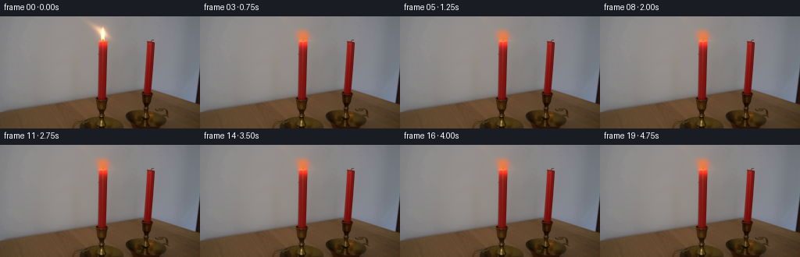
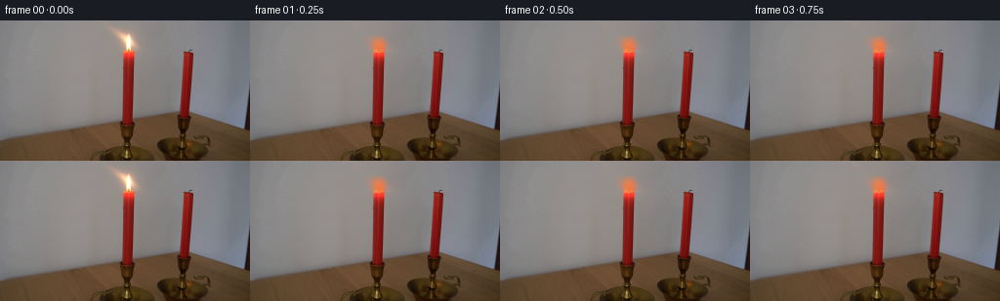
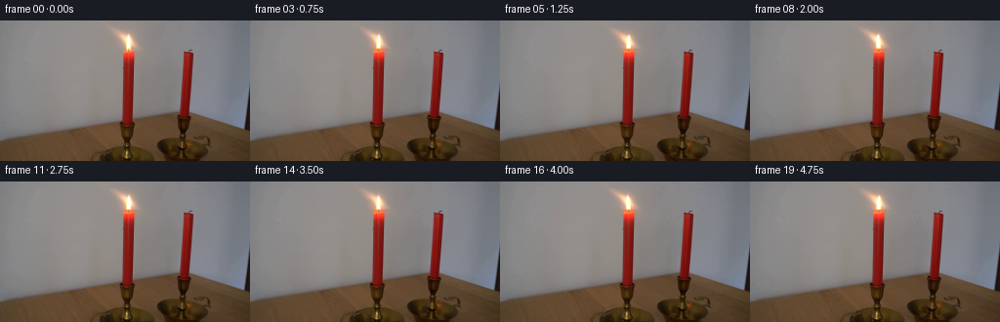
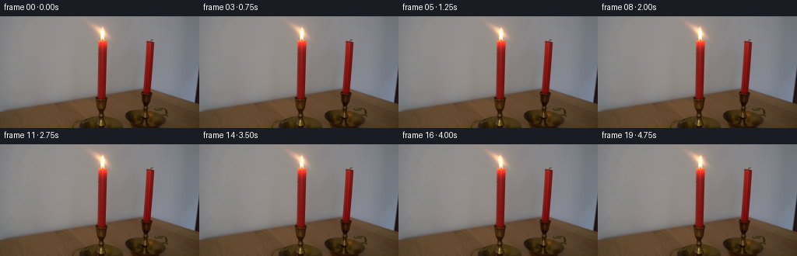
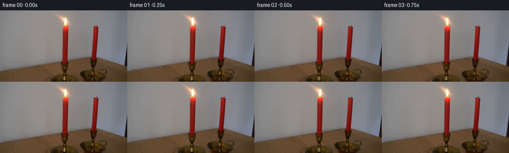

CODING AGENTS AS PIXEL WORLD MODELS
traex/DeepSeek-V4.1-Flash · 0091
点击播放 · 原生 RGB 像素
逐轮保存的候选
回放视频、检查图与代码变化。
每份候选均可单独播放。实际图片检查记录在下方工具轨迹中。
候选 01播放与检查图
点击播放 · 原生 RGB 像素


展开代码变化
--- 上一保存版本
+++ 本次保存版本
@@ -0,0 +1,150 @@
+from pathlib import Path
+
+import cv2
+import numpy as np
+from PIL import Image
+
+import artifact_io
+
+
+CASE_DIR = Path(__file__).resolve().parent
+FRAME_COUNT = 20
+FPS = 4
+WIDTH = 256
+HEIGHT = 144
+
+# The moving layer is confined to the flame and its immediate warm halo.
+X0, X1 = 108, 150
+Y0, Y1 = 4, 31
+ROOT_X = 131.5
+ROOT_Y = 30.0
+
+
+def _edge_fade(size, fade):
+ ramp = np.ones(size, dtype=np.float32)
+ fade = min(fade, size // 2)
+ if fade:
+ edge = 0.5 - 0.5 * np.cos(np.linspace(0.0, np.pi, fade))
+ ramp[:fade] = edge
+ ramp[-fade:] = edge[::-1]
+ return ramp
+
+
+def _clean_plate(frame):
+ """Reconstruct the smooth wall behind the flame and its glow."""
+ mask = np.zeros(frame.shape[:2], dtype=np.uint8)
+ mask[Y0:Y1, X0:X1] = 255
+ plate = cv2.inpaint(frame, mask, 7.0, cv2.INPAINT_TELEA)
+
+ # The wall is low-frequency, so remove inpaint texture while retaining its
+ # vertical shading. Keep the untouched image outside the small work region.
+ smooth = cv2.GaussianBlur(plate, (0, 0), sigmaX=1.15, sigmaY=1.35)
+ blend = np.zeros(frame.shape[:2], dtype=np.float32)
+ blend[Y0 + 2 : Y1, X0 + 2 : X1 - 2] = 1.0
+ blend = cv2.GaussianBlur(blend, (0, 0), 0.75)
+ return plate * (1.0 - blend[..., None]) + smooth * blend[..., None]
+
+
+def _flame_layer(frame, plate):
+ """Return an additive, premultiplied RGB glow layer."""
+ delta = np.maximum(frame.astype(np.float32) - plate.astype(np.float32), 0.0)
+
+ # Suppress low-level inpaint residual, then retain the soft outer glow.
+ delta = np.maximum(delta - 0.8, 0.0)
+ window_x = _edge_fade(X1 - X0, 5)
+ window_y = _edge_fade(Y1 - Y0, 4)
+ window = window_y[:, None] * window_x[None, :]
+
+ layer = np.zeros_like(delta)
+ layer[Y0:Y1, X0:X1] = delta[Y0:Y1, X0:X1] * window[..., None]
+
+ # A very small denoise keeps the photographic core but prevents isolated
+ # compression pixels from becoming visible during subpixel resampling.
+ for channel in range(3):
+ layer[..., channel] = cv2.GaussianBlur(
+ layer[..., channel], (0, 0), sigmaX=0.30, sigmaY=0.30
+ )
+ return layer
+
+
+def _motion(time):
+ # Correlated oscillations produce a flame that bends as one coherent body,
+ # with smaller faster changes superimposed on the main slow sway.
+ sway = (
+ 1.10 * np.sin(2.0 * np.pi * 0.43 * time + 0.20)
+ + 0.52 * np.sin(2.0 * np.pi * 0.87 * time + 1.40)
+ + 0.18 * np.sin(2.0 * np.pi * 1.55 * time + 2.10)
+ )
+ gust = 1.0 + 0.24 * np.exp(-((time - 2.25) / 0.48) ** 2)
+ sway *= gust
+
+ stretch = (
+ 0.020 * np.sin(2.0 * np.pi * 0.51 * time + 0.80)
+ + 0.010 * np.sin(2.0 * np.pi * 1.08 * time + 2.40)
+ )
+ width = 1.0 + (
+ 0.028 * np.sin(2.0 * np.pi * 0.61 * time + 1.90)
+ + 0.010 * np.sin(2.0 * np.pi * 1.27 * time + 0.30)
+ )
+ gain = 1.0 + (
+ 0.060 * np.sin(2.0 * np.pi * 0.73 * time + 0.45)
+ + 0.026 * np.sin(2.0 * np.pi * 1.49 * time + 1.75)
+ )
+ turbulence = 0.30 * np.sin(2.0 * np.pi * 0.68 * time + 2.70)
+ return sway, stretch, width, gain, turbulence
+
+
+def _warp_glow(layer, time):
+ sway, stretch, width, gain, turbulence = _motion(time)
+ height = ROOT_Y - Y0
+
+ yy, xx = np.mgrid[Y0:Y1, X0:X1].astype(np.float32)
+ normalized_height = np.clip((ROOT_Y - yy) / height, 0.0, 1.0)
+
+ # The root stays planted at the wick while displacement grows toward the tip.
+ shear = sway * normalized_height**1.22
+ ripple = turbulence * np.sin(
+ 2.0 * np.pi * (ROOT_Y - yy) / 8.4 + 2.0 * np.pi * 0.43 * time
+ ) * normalized_height**0.72
+ source_x = (xx - shear - ripple).astype(np.float32)
+ source_x = (ROOT_X + (source_x - ROOT_X) / width).astype(np.float32)
+ source_y = (ROOT_Y - (ROOT_Y - yy) / (1.0 + stretch)).astype(np.float32)
+
+ warped = np.empty((Y1 - Y0, X1 - X0, 3), dtype=np.float32)
+ for channel in range(3):
+ warped[..., channel] = cv2.remap(
+ layer[..., channel],
+ source_x - X0,
+ source_y - Y0,
+ interpolation=cv2.INTER_CUBIC,
+ borderMode=cv2.BORDER_REPLICATE,
+ )
+
+ # Modulate the whole emission slightly while preserving its warm chromaticity.
+ warped *= gain
+ return warped
+
+
+def generate():
+ source = np.asarray(Image.open(CASE_DIR / "first_frame.png").convert("RGB"))
+ if source.shape != (HEIGHT, WIDTH, 3):
+ raise ValueError(f"unexpected first frame shape: {source.shape}")
+
+ plate = _clean_plate(source)
+ layer = _flame_layer(source, plate)
+ frames = np.empty((FRAME_COUNT, HEIGHT, WIDTH, 3), dtype=np.uint8)
+ frames[0] = source
+
+ for index in range(1, FRAME_COUNT):
+ time = index / FPS
+ frame = plate.copy()
+ glow = _warp_glow(layer, time)
+ frame[Y0:Y1, X0:X1] += glow
+ frames[index] = np.clip(np.rint(frame), 0, 255).astype(np.uint8)
+
+ artifact_io.save(frames, CASE_DIR)
+ return frames
+
+
+if __name__ == "__main__":
+ generate()
候选 02播放与检查图
点击播放 · 原生 RGB 像素

展开代码变化
--- 上一保存版本
+++ 本次保存版本
@@ -112,8 +112,9 @@
warped = np.empty((Y1 - Y0, X1 - X0, 3), dtype=np.float32)
for channel in range(3):
+ cropped = layer[Y0:Y1, X0:X1, channel]
warped[..., channel] = cv2.remap(
- layer[..., channel],
+ cropped,
source_x - X0,
source_y - Y0,
interpolation=cv2.INTER_CUBIC,
候选 03播放与检查图
点击播放 · 原生 RGB 像素

展开代码变化
--- 上一保存版本
+++ 本次保存版本
@@ -14,8 +14,8 @@
HEIGHT = 144
# The moving layer is confined to the flame and its immediate warm halo.
-X0, X1 = 108, 150
-Y0, Y1 = 4, 31
+X0, X1 = 114, 145
+Y0, Y1 = 6, 29
ROOT_X = 131.5
ROOT_Y = 30.0
@@ -34,7 +34,7 @@
"""Reconstruct the smooth wall behind the flame and its glow."""
mask = np.zeros(frame.shape[:2], dtype=np.uint8)
mask[Y0:Y1, X0:X1] = 255
- plate = cv2.inpaint(frame, mask, 7.0, cv2.INPAINT_TELEA)
+ plate = cv2.inpaint(frame, mask, 5.0, cv2.INPAINT_TELEA)
# The wall is low-frequency, so remove inpaint texture while retaining its
# vertical shading. Keep the untouched image outside the small work region.
候选 04播放与检查图
点击播放 · 原生 RGB 像素
展开代码变化
代码未变化；重新保存了产物。
候选 05播放与检查图
候选 06播放与检查图
点击播放 · 原生 RGB 像素


展开代码变化
--- 上一保存版本
+++ 本次保存版本
@@ -14,8 +14,8 @@
HEIGHT = 144
# The moving layer is confined to the flame and its immediate warm halo.
-X0, X1 = 114, 145
-Y0, Y1 = 6, 29
+X0, X1 = 112, 147
+Y0, Y1 = 5, 31
ROOT_X = 131.5
ROOT_Y = 30.0
@@ -32,31 +32,28 @@
def _clean_plate(frame):
"""Reconstruct the smooth wall behind the flame and its glow."""
- mask = np.zeros(frame.shape[:2], dtype=np.uint8)
- mask[Y0:Y1, X0:X1] = 255
- plate = cv2.inpaint(frame, mask, 5.0, cv2.INPAINT_TELEA)
+ source = frame.astype(np.float32)
+ plate = source.copy()
- # The wall is low-frequency, so remove inpaint texture while retaining its
- # vertical shading. Keep the untouched image outside the small work region.
- smooth = cv2.GaussianBlur(plate, (0, 0), sigmaX=1.15, sigmaY=1.35)
- blend = np.zeros(frame.shape[:2], dtype=np.float32)
- blend[Y0 + 2 : Y1, X0 + 2 : X1 - 2] = 1.0
- blend = cv2.GaussianBlur(blend, (0, 0), 0.75)
- return plate * (1.0 - blend[..., None]) + smooth * blend[..., None]
+ # The wall is nearly a horizontal linear gradient. Interpolating clean
+ # anchors on either side avoids pulling red candle pixels into the flame.
+ xs = np.arange(X0, X1)
+ blend = (xs - 109.5) / (149.5 - 109.5)
+ for y in range(Y0, Y1):
+ left = np.median(source[y, 107:112], axis=0)
+ right = np.median(source[y, 147:152], axis=0)
+ plate[y, X0:X1] = (
+ left * (1.0 - blend[:, None]) + right * blend[:, None]
+ )
+ return plate
def _flame_layer(frame, plate):
"""Return an additive, premultiplied RGB glow layer."""
delta = np.maximum(frame.astype(np.float32) - plate.astype(np.float32), 0.0)
- # Suppress low-level inpaint residual, then retain the soft outer glow.
- delta = np.maximum(delta - 0.8, 0.0)
- window_x = _edge_fade(X1 - X0, 5)
- window_y = _edge_fade(Y1 - Y0, 4)
- window = window_y[:, None] * window_x[None, :]
-
layer = np.zeros_like(delta)
- layer[Y0:Y1, X0:X1] = delta[Y0:Y1, X0:X1] * window[..., None]
+ layer[Y0:Y1, X0:X1] = delta[Y0:Y1, X0:X1]
# A very small denoise keeps the photographic core but prevents isolated
# compression pixels from becoming visible during subpixel resampling.
可观测工具轨迹
实际执行的命令与返回图片。
命令 1exit 0
/bin/bash -c "pwd && rg --files -g '"'!*__pycache__*'"' | sed -n '1,200p'"
命令 2exit 0
/bin/bash -c 'cat prompt.txt'
命令 3exit 0
/bin/bash -c 'cat GENERATION_RULES.md'
命令 4exit 0
/bin/bash -c "find . -maxdepth 2 -type f -printf '%p %s bytes\\n' | sort"
命令 5exit 0
/bin/bash -c "sed -n '1,240p' artifact_io.py"
命令 6exit 0
/bin/bash -c "sed -n '1,260p' player_template.html"
命令 7exit 0
/bin/bash -c "python - <<'PY'
from PIL import Image
import numpy as np
im=Image.open('first_frame.png').convert('RGB')
a=np.array(im)
print(im.size, a.shape, a.dtype)
print('min',a.min((0,1)),'max',a.max((0,1)),'mean',a.mean((0,1)).round(1),'std',a.std((0,1)).round(1))
# dominant quantized colors
q=(a//16)*16
u,c=np.unique(q.reshape(-1,3),axis=0,return_counts=True)
for i in np.argsort(c)[-25:][::-1]: print(tuple(u[i]),int(c[i]),round(100*c[i]/a.shape[0]/a.shape[1],2))
PY"命令 8exit 0
/bin/bash -c "python - <<'PY'
from PIL import Image
import numpy as np
from scipy import ndimage
a=np.array(Image.open('first_frame.png').convert('RGB')).astype(int)
r,g,b=a[...,0],a[...,1],a[...,2]
masks={
'red':(r>g*1.5)&(r>b*1.5)&(r>70),
'bright_warm':(r>180)&(g>120)&(b<150),
'yellow':(r>150)&(g>90)&(b<100),
'orange':(r>130)&(g>40)&(g<160)&(b<80),
'verybright':(r>220)&(g>220)&(b>200),
}
for name,m in masks.items():
ys,xs=np.where(m)
print(name,len(xs), 'bbox', (xs.min(),ys.min(),xs.max(),ys.max()) if len(xs) else None)
lab,n=ndimage.label(m)
comps=[]
for i in range(1,n+1):
yy,xx=np.where(lab==i)
if len(xx)>=3: comps.append((len(xx),xx.min(),yy.min(),xx.max(),yy.max(),round(xx.mean(),1),round(yy.mean(),1)))
print(' comps',sorted(comps,reverse=True)[:20])
PY"命令 9exit 0
/bin/bash -c "python - <<'PY'
from PIL import Image
import numpy as np
a=np.array(Image.open('first_frame.png').convert('RGB')).astype(float)
# 4x4 blocks -> 64x36
h,w,_=a.shape
m=a.reshape(36,4,64,4,3).mean((1,3))
for y,row in enumerate(m):
s=''
for r,g,b in row:
mx=max(r,g,b); mn=min(r,g,b); sat=mx-mn
if r>180 and g>130 and b<150: c='F' if g>200 else 'f' # flame/bright warm
elif r>90 and r>g*1.55 and r>b*1.55: c='R'
elif r>60 and g<70 and b<55 and r>g*1.2: c='O'
elif mx<35: c='@'
elif mx<55: c='#'
elif mx<80: c='8'
elif mx<105: c='6'
elif mx<135: c='4'
elif mx<165: c='2'
elif mx<205: c='+'
else: c='.'
s+=c
print(f'{y*4:3d} '+s)
PY"命令 10exit 0
/bin/bash -c "python - <<'PY'
from PIL import Image
import numpy as np
a=np.array(Image.open('first_frame.png').convert('RGB'))
# print crop classification 1px, every row; x 118..144, y 4..60
for y in range(4,61):
s=''
for x in range(118,145):
r,g,b=map(int,a[y,x])
mx=max(r,g,b); mn=min(r,g,b)
if r>220 and g>210 and b>170: c='@'
elif r>200 and g>160 and b<100: c='Y'
elif r>170 and g>100 and b<100: c='y'
elif r>110 and g>35 and b<70 and r>g*1.25: c='o'
elif r>70 and r>g*1.5 and r>b*1.5: c='R'
elif r>110 and g<70 and b<60: c='r'
elif mx<25:c=' '
elif mx<45:c='.'
elif mx<65:c=':'
elif mx<85:c='-'
elif mx<110:c='='
elif mx<140:c='+'
elif mx<170:c='*'
elif mx<205:c='#'
else:c='%'
s+=c
print(f'{y:3d} {s}')
PY"命令 11exit 0
/bin/bash -c "python - <<'PY'
from PIL import Image
import numpy as np
a=np.array(Image.open('first_frame.png').convert('RGB')).astype(float)
# rows around left flame: report non-bg bounding boxes by thresholds and row/col profiles
for y in range(6,43):
xs=np.where((a[y,:,0]>120)&(a[y,:,1]>55)&(a[y,:,2]<150)&(a[y,:,0]>a[y,:,1]*1.15))[0]
if len(xs): print(y, xs.min(), xs.max(), len(xs))
print('cols')
for x in range(114,148):
ys=np.where((a[:,x,0]>120)&(a[:,x,1]>55)&(a[:,x,2]<150)&(a[:,x,0]>a[:,x,1]*1.15))[0]
if len(ys): print(x, ys.min(), ys.max(), len(ys))
PY"命令 12exit 0
/bin/bash -c "python - <<'PY'
from PIL import Image
import numpy as np
a=np.array(Image.open('first_frame.png').convert('RGB'))
for y in [8,9,10,11,12,13,14,15,16,18,20,22,24,26,28,29,30,31,32]:
print('\\ny=',y)
for x in range(112,143):
r,g,b=map(int,a[y,x]);
if max(r,g,b)>50 or r>70: print(f'{x}:({r:3},{g:3},{b:3})',end=' ')
print()
PY"命令 13exit 0
/bin/bash -c "python - <<'PY'
from PIL import Image
import numpy as np
a=np.array(Image.open('first_frame.png').convert('RGB'))
# exact RGB on selected rows around right candle top and wick; just compact runs of saturation
for y in range(26,48):
s=''
for x in range(180,202):
r,g,b=map(int,a[y,x]); mx=max(r,g,b); sat=mx-min(r,g,b)
if r>g*1.5 and r>b*1.5 and r>80:c='R'
elif r>g*1.25 and r>b*1.25 and r>65:c='r'
elif sat>18:c='o'
elif mx<50:c=' '
elif mx<80:c='.'
elif mx<110:c=':'
elif mx<140:c='='
elif mx<170:c='+'
elif mx<205:c='*'
else:c='#'
s+=c
print(f'{y:3d} {s}')
print('rows exact')
for y in range(28,42): print(y,[tuple(map(int,a[y,x])) for x in range(185,194)])
PY"命令 14exit 0
/bin/bash -c "python - <<'PY'
from PIL import Image
import numpy as np
a=np.array(Image.open('first_frame.png').convert('RGB')).astype(float)
# horizontal median/edge gradients in candidate table region
for y in [100,110,120,128,136,143]:
d=np.abs(np.diff(a[y],axis=0)).sum(1)
print(y, sorted([(round(float(v),1),x) for x,v in enumerate(d)], reverse=True)[:12])
# vertical gradients center left
for x in [40,80,125,190,230]:
d=np.abs(np.diff(a[:,x],axis=0)).sum(1)
print('x',x, sorted([(round(float(v),1),y) for y,v in enumerate(d)], reverse=True)[:10])
PY"命令 15exit 0
/bin/bash -c "python - <<'PY'
from PIL import Image
import numpy as np
a=np.array(Image.open('first_frame.png').convert('RGB'))
# sampled grid at 8 px horizontal / 4 px vertical, compact luma hue
for y in range(0,144,4):
s=''
for x in range(0,256,4):
r,g,b=map(int,a[y:y+4,x:x+4].reshape(-1,3).mean(0)); mx=max(r,g,b)
if r>g*1.6 and r>b*1.6 and r>80:c='R'
elif r>g*1.25 and r>b*1.25 and r>80:c='o'
elif mx<30:c=' '
elif mx<50:c='.'
elif mx<70:c=':'
elif mx<90:c='-'
elif mx<110:c='='
elif mx<135:c='+'
elif mx<165:c='*'
elif mx<200:c='#'
else:c='@'
s+=c
print(f'{y:3d} {s}')
PY"命令 16exit 0
/bin/bash -c "python - <<'PY'
from PIL import Image
import numpy as np
a=np.array(Image.open('first_frame.png').convert('RGB')).astype(float)
# estimate background row by interpolation between left and right anchors for crop x=112..146,y=5..31
for y in range(5,32):
xs=np.r_[106:114,144:152]
vals=a[y,xs]
bg=np.median(vals,axis=0)
pix=a[y,112:147]
r,g,b=pix.T; R,G,B=bg
score=np.maximum.reduce([(r-b)-12,(r-R)-20,(g-G)-15])
m=score>10
if m.any():
xs2=np.where(m)[0]+112
print(y,'bg',bg.astype(int),'scoremax',round(score.max(),1),'bbox',xs2.min(),xs2.max(),'n',m.sum())
PY"命令 17exit 0
/bin/bash -c "python - <<'PY'
from PIL import Image
import numpy as np
a=np.array(Image.open('first_frame.png').convert('RGB')).astype(float)
# compare row values over x to estimate smooth trend / background through flame
for y in [7,8,9,10,11,12,13,14,16,18,20,22,24,26,28,29,30]:
row=a[y,112:147]
# robust quadratic using points outside 116..143? x 112..115 and 144..146 only
for x in [112,114,116,118,120,122,124,126,128,130,132,134,136,138,140,142,144,146]:
if x>=112 and x<147:
r,g,b=row[x-112]
if x in [112,114,116,118,120,122,124,126,128,130,132,134,136,138,140,142,144,146]:
pass
print(y, 'left',a[y,108:116].mean(0).round(0), 'right',a[y,144:152].mean(0).round(0))
PY"命令 18exit 0
/bin/bash -c "python - <<'PY'
from PIL import Image
import numpy as np
from scipy.ndimage import gaussian_filter
a=np.array(Image.open('first_frame.png').convert('RGB')).astype(float)
# crop and gradient magnitude
crop=a[5:32,112:147]
gx=np.diff(crop,axis=1); gy=np.diff(crop,axis=0)
e=np.zeros(crop.shape[:2]); e[:,:-1]+=np.abs(gx).sum(2); e[:-1,:]+=np.abs(gy).sum(2)
for y in range(27):
s=''
for x in range(35):
r,g,b=crop[y,x]; R,G,B=a[y+5,[112+x-6 if x>=6 else 112+x+35]].squeeze()
v=e[y,x]
if v>60:c='@'
elif v>35:c='#'
elif v>20:c='*'
elif v>10:c='+'
elif v>5:c='.'
else:c=' '
s+=c
print(f'{y+5:2d} {s}')
PY"命令 19exit 0
/bin/bash -c "python - <<'PY'
from PIL import Image
import numpy as np
from scipy.ndimage import gaussian_filter
a=np.array(Image.open('first_frame.png').convert('RGB')).astype(float)
# background from per-row cubic interpolation using anchors x 112:117 and 143:148; inspect diff
for y in range(6,32):
xs=np.r_[108:116,143:151]
# linear fit R,G,B versus x on anchor means, use actual nearby values
X=np.c_[np.ones(len(xs)),xs]
coef=np.linalg.lstsq(X,a[y,xs],rcond=None)[0]
pred=np.c_[np.ones(256),np.arange(256)]@coef
d=np.abs(a[y]-pred).sum(1)
seg=d[112:147]
print(f'{y:2d}', 'max',round(seg.max()),'xs',[(112+i,round(v)) for i,v in enumerate(seg) if v>40])
PY"命令 20exit 0
/bin/bash -c "python - <<'PY'
from PIL import Image
import numpy as np
a=np.array(Image.open('first_frame.png').convert('RGB')).astype(float)
# quantiles each row of anchors left/right
for y in range(5,32):
l=a[y,110:116]; r=a[y,144:150]
print(y,'L',l.mean(0).round(0),'R',r.mean(0).round(0))
PY"命令 21exit 0
/bin/bash -c "python - <<'PY'
from PIL import Image
import numpy as np
a=np.array(Image.open('first_frame.png').convert('RGB')).astype(float)
h,w,_=a.shape
# 4x4 blocks: 64x36; classify by hue and brightness
for by in range(0,h,4):
s=''
for bx in range(0,w,4):
p=a[by:by+4,bx:bx+4].reshape(-1,3)
r,g,b=np.median(p,0); mx=max(r,g,b); mn=min(r,g,b); sat=mx-mn
if mx<25: ch=' '
elif mx<50: ch='.'
elif r>g*1.45 and r>b*1.3 and r>70: ch='R'
elif r>g*1.12 and g>b*1.1 and r>60: ch='o'
elif r>g*1.08 and r>b*1.08 and r>110: ch='w'
elif sat<8: ch='k' if mx<90 else 'g' if mx<150 else 'W'
elif b>r*1.05: ch='b'
elif mx<80: ch=':'
elif mx<120: ch='='
elif mx<160: ch='+'
elif mx<200: ch='*'
else: ch='#'
s+=ch
print(f'{by:03d} {s}')
PY"命令 22exit 0
/bin/bash -c "python - <<'PY'
from PIL import Image
import numpy as np
a=np.array(Image.open('first_frame.png').convert('RGB'))
# row 100-143 crop, list runs of very dark pixels (<50 all maybe) at 2px blocks
for y in range(100,144,2):
s=''
for x in range(80,240,2):
p=a[y:y+2,x:x+2].reshape(-1,3).mean(0)
if p.max()<35:c='@'
elif p.max()<55:c='#'
elif p.max()<75:c='O'
elif p[0]>p[1]*1.5 and p[0]>p[2]*1.5:c='R'
elif p.max()<100:c='+'
elif p.max()<135:c='-'
elif p.max()<175:c='.'
else:c=' '
s+=c
print(f'{y:3d} {s}')
PY"命令 23exit 0
/bin/bash -c "python - <<'PY'
try:
import scipy; print('scipy',scipy.__version__)
except Exception as e: print('no scipy',e)
try:
import cv2; print('cv2',cv2.__version__)
except Exception as e: print('no cv2',e)
try:
import imageio; print('imageio',imageio.__version__)
except Exception as e: print('no imageio',e)
PY"命令 24exit 0
/bin/bash -c "python - <<'PY'
from PIL import Image
import numpy as np
from scipy.ndimage import gaussian_filter, binary_dilation
a=np.array(Image.open('first_frame.png').convert('RGB')).astype(float)
bg=a.copy()
for y in range(6,31):
L=np.median(a[y,104:113],axis=0)
R=np.median(a[y,145:154],axis=0)
xs=np.arange(112,147)
s=(xs-112)/(146-112)
bg[y,112:147]=L[None,:]*(1-s[:,None])+R[None,:]*s[:,None]
d=a-bg
lum=d@np.array([.299,.587,.114])
warm=(a[...,0]-a[...,2])-(bg[...,0]-bg[...,2])
chrom=np.sqrt((d*d).sum(2))
score=np.maximum.reduce([lum*0.8,warm,chrom*.35])
roi=score[6:31,112:147]
for th in [0,2,4,6,8,10,15,20,30,40,60]:
m=roi>th
ys,xs=np.where(m)
print(th,m.sum(),(xs.min()+112,ys.min()+6,xs.max()+112,ys.max()+6) if len(xs) else None)
# show alpha rough at 1px, every row
for y in range(7,31):
s=''
for x in range(112,147):
v=score[y,x]
if v<3:c=' '
elif v<8:c='.'
elif v<15:c=':'
elif v<30:c='+'
elif v<60:c='*'
elif v<100:c='#'
else:c='@'
s+=c
print(f'{y:2d} {s}')
PY"命令 25exit 1
/bin/bash -c "python - <<'PY'
from PIL import Image
import numpy as np
from scipy.ndimage import gaussian_filter
a=np.array(Image.open('first_frame.png').convert('RGB')).astype(float)
# fit per-row quadratic background through x=105..113 and 144..152 using polynomial smooth enough
bg=a.copy()
for y in range(5,32):
xs=np.r_[104:113,145:154]
# fit quadratic robustly iteratively
coef=np.polyfit(xs,a[y,xs],2)
for _ in range(4):
pred=np.polyval(coef,np.arange(256))
resid=np.abs(a[y]-pred).sum(1)
good=(resid<15)
good[:90]=False;good[160:]=False
xs2=np.where(good)[0]
if len(xs2)>8: coef=np.polyfit(xs2,a[y,xs2],2)
pred=np.polyval(coef,np.arange(256))
bg[y]=pred
d=a-bg
lum=d@np.array([.299,.587,.114]); warm=(a[...,0]-a[...,2])-(bg[...,0]-bg[...,2]); chrom=np.sqrt((d*d).sum(2))
score=np.maximum.reduce([lum*.8,warm,chrom*.35])
for y in range(7,31):
s=''
for x in range(112,147):
v=score[y,x]
if v<3:c=' '
elif v<8:c='.'
elif v<15:c=':'
elif v<30:c='+'
elif v<60:c='*'
elif v<100:c='#'
else:c='@'
s+=c
print(f'{y:2d} {s}')
PY"命令 26exit 0
/bin/bash -c "python - <<'PY'
from PIL import Image
import numpy as np
a=np.array(Image.open('first_frame.png').convert('RGB')).astype(float)
bg=a.copy()
for y in range(5,32):
xs=np.r_[104:113,145:154]
coef=np.stack([np.polyfit(xs,a[y,xs,c],2) for c in range(3)],1)
for _ in range(4):
pred=np.stack([np.polyval(coef[:,c],np.arange(256)) for c in range(3)],1)
resid=np.abs(a[y]-pred).sum(1)
good=resid<15; good[:90]=False;good[160:]=False
xs2=np.where(good)[0]
if len(xs2)>8: coef=np.stack([np.polyfit(xs2,a[y,xs2,c],2) for c in range(3)],1)
bg[y]=np.stack([np.polyval(coef[:,c],np.arange(256)) for c in range(3)],1)
d=a-bg
lum=d@np.array([.299,.587,.114]); warm=(a[...,0]-a[...,2])-(bg[...,0]-bg[...,2]); chrom=np.sqrt((d*d).sum(2))
score=np.maximum.reduce([lum*.8,warm,chrom*.35])
for y in range(7,31):
s=''
for x in range(112,147):
v=score[y,x]
if v<3:c=' '
elif v<8:c='.'
elif v<15:c=':'
elif v<30:c='+'
elif v<60:c='*'
elif v<100:c='#'
else:c='@'
s+=c
print(f'{y:2d} {s}')
PY"命令 27exit 0
/bin/bash -c "python - <<'PY'
from PIL import Image
import numpy as np
a=np.array(Image.open('first_frame.png').convert('RGB')).astype(float)
bg=a.copy()
for y in range(5,32):
xs=np.r_[104:113,145:154]
coef=np.stack([np.polyfit(xs,a[y,xs,c],2) for c in range(3)],1)
for _ in range(3):
pred=np.stack([np.polyval(coef[:,c],np.arange(256)) for c in range(3)],1)
resid=np.abs(a[y]-pred).sum(1)
good=resid<15; good[:90]=False;good[160:]=False
xs2=np.where(good)[0]
if len(xs2)>8: coef=np.stack([np.polyfit(xs2,a[y,xs2,c],2) for c in range(3)],1)
bg[y]=np.stack([np.polyval(coef[:,c],np.arange(256)) for c in range(3)],1)
d=a-bg
lum=d@np.array([.299,.587,.114]); warm=(a[...,0]-a[...,2])-(bg[...,0]-bg[...,2]); chrom=np.sqrt((d*d).sum(2))
score=np.maximum.reduce([lum*.8,warm,chrom*.35])
alpha=np.clip((score-4)/38,0,1)
# horizontal range actual nonneg residual
for y in range(8,31):
idx=np.where(alpha[y,100:160]>.25)[0]
if len(idx): print(y,idx.min()+100,idx.max()+100,round(alpha[y,100:160].max(),2))
PY"命令 28exit 0
/bin/bash -c "python - <<'PY'
from PIL import Image
import numpy as np
a=np.array(Image.open('first_frame.png').convert('RGB')).astype(float)
# use flame core dark-to-bright outline from excess over interpolated bg; save diagnostic images at 8x
from scipy.ndimage import gaussian_filter
bg=a.copy()
for y in range(5,32):
xs=np.r_[104:113,145:154]
coef=np.stack([np.polyfit(xs,a[y,xs,c],2) for c in range(3)],1)
for _ in range(3):
pred=np.stack([np.polyval(coef[:,c],np.arange(256)) for c in range(3)],1)
resid=np.abs(a[y]-pred).sum(1)
good=resid<15; good[:90]=False;good[160:]=False
xs2=np.where(good)[0]
if len(xs2)>8: coef=np.stack([np.polyfit(xs2,a[y,xs2,c],2) for c in range(3)],1)
bg[y]=np.stack([np.polyval(coef[:,c],np.arange(256)) for c in range(3)],1)
d=a-bg; lum=d@np.array([.299,.587,.114]); warm=(a[...,0]-a[...,2])-(bg[...,0]-bg[...,2]); chrom=np.sqrt((d*d).sum(2))
score=np.maximum.reduce([lum*.8,warm,chrom*.35]); alpha=np.clip((score-3)/30,0,1)
alpha[:6]=0;alpha[32:]=0;alpha[:,:110]=0;alpha[:,147:]=0
fg=a-bg
# premultiplied
pm=fg*alpha[...,None]
out=np.clip(bg+pm,0,255)
Image.fromarray(out.astype('uint8')).resize((1024,576),Image.Resampling.NEAREST).save('.tmp/alpha_check.png')
Image.fromarray((np.clip(alpha,0,1)*255).astype('uint8')).resize((1024,576),Image.Resampling.NEAREST).save('.tmp/alpha_mask.png')
print('saved')
PY"命令 29exit 0
/bin/bash -c "python - <<'PY'
from PIL import Image
im=Image.open('first_frame.png')
print(im.info)
print(im.getexif())
PY"命令 30exit 0
/bin/bash -c "python - <<'PY'
from PIL import Image
import numpy as np
from scipy.ndimage import gaussian_filter
a=np.array(Image.open('first_frame.png').convert('RGB')).astype(float)
# inspect horizontal edge around candle tops at y 30-33 and body edges
for y in range(28,36):
print('\\ny',y)
for x in range(120,142): print(x, tuple(map(int,a[y,x])),end='; ')
print()
PY"命令 31exit 0
/bin/bash -c "python - <<'PY'
from PIL import Image
import numpy as np
a=np.array(Image.open('first_frame.png').convert('RGB')).astype(float)
# print full rows around right candle top to locate wax rim
for y in range(26,38):
print('\\ny',y)
for x in range(180,202): print(x, tuple(map(int,a[y,x])),end='; ')
print()
PY"命令 32exit 0
/bin/bash -c "python - <<'PY'
from PIL import Image
import numpy as np
a=np.array(Image.open('first_frame.png').convert('RGB')).astype(float)
# look at background vertical structure / edge y=31 around left candle x 120-141
for y in range(29,34):
print(y,[(x,tuple(map(int,a[y,x]))) for x in range(120,142)])
PY"命令 33exit 0
/bin/bash -c "python - <<'PY'
from PIL import Image
import numpy as np
a=np.array(Image.open('first_frame.png').convert('RGB')).astype(float)
# use x gradient in y 20-31 to infer background under flame with cubic at edges
for y in range(10,32):
# background estimate at x 115..145 by cubic interpolation of rows y +/-? Instead fit surface low-pass outside flame.
pass
# print horizontal gradients near flame edges and per-row edge strengths
for y in [10,12,14,16,18,20,22,24,26,28,30]:
g=np.abs(np.diff(a[y],axis=0)).sum(1)
print(y, [(x+112,round(g[x],1)) for x in np.argsort(g[108:150])[-10:][::-1]])
PY"命令 34exit 0
/bin/bash -c "python - <<'PY'
from PIL import Image
import numpy as np
a=np.array(Image.open('first_frame.png').convert('RGB')).astype(float)
# print luminance/color matrix around flame 112..145 x 6..31 as difference from estimated background with anchors via smoothing outside
# calculate quadratic bg in full image; report residual RGB at strongest points per row
bg=a.copy()
for y in range(5,32):
xs=np.r_[104:113,145:154]
coef=np.stack([np.polyfit(xs,a[y,xs,c],2) for c in range(3)],1)
for _ in range(3):
pred=np.stack([np.polyval(coef[:,c],np.arange(256)) for c in range(3)],1)
resid=np.abs(a[y]-pred).sum(1)
good=resid<15; good[:90]=False;good[160:]=False
xs2=np.where(good)[0]
if len(xs2)>8: coef=np.stack([np.polyfit(xs2,a[y,xs2,c],2) for c in range(3)],1)
bg[y]=np.stack([np.polyval(coef[:,c],np.arange(256)) for c in range(3)],1)
for y in range(9,31):
vals=[]
for x in range(112,147):
d=a[y,x]-bg[y,x]
if d[0]>10 or d[2]>10: vals.append((x,tuple(d.astype(int))))
print(y,vals)
PY"命令 35exit 0
/bin/bash -c "python - <<'PY'
from PIL import Image
import numpy as np
a=np.array(Image.open('first_frame.png').convert('RGB')).astype(float)
# background using left/right anchors robustly: fit row quadratic excluding x100:155, but global structure
bg=a.copy()
for y in range(5,33):
xs=np.r_[104:113,145:154]
coef=np.stack([np.polyfit(xs,a[y,xs,c],2) for c in range(3)],1)
bg[y]=np.stack([np.polyval(coef[:,c],np.arange(256)) for c in range(3)],1)
# Is bg plausible? compare outside zone residual
for y in [5,10,15,20,25,30,31]:
d=np.abs(a[y]-bg[y]).sum(1)
print(y, np.quantile(d,[.5,.9,.99]), [(x,round(d[x])) for x in [0,50,100,104,105,106,110,112,144,145,150,160,200,255]])
PY"命令 36exit 0
/bin/bash -c "python - <<'PY'
from PIL import Image
import numpy as np
a=np.array(Image.open('first_frame.png').convert('RGB')).astype(float)
# print row averages in flame crop background estimate from quadratic using actual anchors, y 6..31
for y in range(6,32):
xs=np.r_[104:113,145:154]
coef=np.stack([np.polyfit(xs,a[y,xs,c],2) for c in range(3)],1)
pred=np.stack([np.polyval(coef[:,c],np.arange(256)) for c in range(3)],1)
print(y, 'bg@125',pred[125].round(1), 'bg@135',pred[135].round(1),'actual',a[y,125].round(0),a[y,135].round(0))
PY"命令 37exit 0
/bin/bash -c "python - <<'PY'
from PIL import Image
import numpy as np
a=np.array(Image.open('first_frame.png').convert('RGB')).astype(float)
# compare symmetric points around candle center 131.5 at y 10..28; get per-row background at x120 and x145
for y in range(8,31):
print(y,'L145',tuple(a[y,145].astype(int)),'R118',tuple(a[y,118].astype(int)),'mid',tuple(a[y,131].astype(int)))
PY"命令 38exit 0
/bin/bash -c "python - <<'PY'
from PIL import Image
import numpy as np
a=np.array(Image.open('first_frame.png').convert('RGB')).astype(float)
# horizontal local gradient per row for left candle, identify two edge positions by max positive/negative around 118..143
for y in range(9,31):
d=a[y].sum(1)
grad=np.diff(d)
pos=np.argsort(grad[112:147])[-3:][::-1]+112
neg=np.argsort(grad[112:147])[:3]+112
print(y,'pos',[(int(x),round(grad[x],1)) for x in pos], 'neg',[(int(x),round(grad[x],1)) for x in neg])
PY"命令 39exit 0
/bin/bash -c "python - <<'PY'
from PIL import Image
import numpy as np
a=np.array(Image.open('first_frame.png').convert('RGB')).astype(float)
for y in [18,20,22,24,26,28]:
print('\\ny',y)
for x in range(120,142): print(f'{x}:{a[y,x,0]:.0f},{a[y,x,1]:.0f},{a[y,x,2]:.0f}',end=' ')
print()
PY"命令 40exit 0
/bin/bash -c "python - <<'PY'
from PIL import Image
import numpy as np
a=np.array(Image.open('first_frame.png').convert('RGB')).astype(float)
# measure wick/shadow region against local bg from row neighbors
for y in range(26,35):
print(y, 'x188..198', [tuple(a[y,x].astype(int)) for x in range(188,199)])
PY"命令 41exit 0
/bin/bash -c "python - <<'PY'
from PIL import Image
import numpy as np
a=np.array(Image.open('first_frame.png').convert('RGB')).astype(float)
# print rows x 110..150 y 5..12 exact luma
for y in range(4,13):
print(y,[int(round(a[y,x].mean())) for x in range(105,155)])
PY"命令 42exit 0
/bin/bash -c "python - <<'PY'
from PIL import Image
import numpy as np
a=np.array(Image.open('first_frame.png').convert('RGB')).astype(float)
# print color chroma in flame and neighboring rows
for y in range(12,30):
print(y, [(x, tuple(a[y,x].astype(int))) for x in [126,127,128,129,130,131,132,133,134,135,136,137]])
PY"命令 43exit 1
/bin/bash -c "python - <<'PY'
from PIL import Image
import numpy as np
a=np.array(Image.open('first_frame.png').convert('RGB')).astype(float)
# candidate bg from interpolation using row x=115 and x=143 direct, and use broad smooth; compare around expected
for y in range(8,31):
l=a[y,116:121].mean(0); r=a[y,141:146].mean(0)
bg=l+(r-l)*(np.arange(256)-118.5)/(143-118.5)
print(y,'bg131',bg[131].round(0),'act',a[y,131].round(0))
PY"命令 44exit 0
/bin/bash -c "python - <<'PY'
from PIL import Image
import numpy as np
from scipy.ndimage import gaussian_filter
a=np.array(Image.open('first_frame.png').convert('RGB')).astype(float)
H,W,_=a.shape
valid=np.ones((H,W),float)
valid[4:34,106:153]=0
# also remove left candle itself below 29 and flame spill? region all excluded
for sig in [(2,3),(3,4),(4,5),(5,6)]:
num=np.stack([gaussian_filter(a[...,c]*valid,sigma=sig,mode='nearest') for c in range(3)],2)
den=gaussian_filter(valid,sigma=sig,mode='nearest')
B=num/den[...,None]
print('sig',sig)
for y in [5,6,8,10,12,15,20,25,28,30,31]:
print(y,B[y,131].round(0), 'act',a[y,131].round(0),'left',B[y,120].round(0),a[y,120].round(0))
PY"命令 45exit 0
/bin/bash -c "python - <<'PY'
from PIL import Image
import numpy as np
a=np.array(Image.open('first_frame.png').convert('RGB')).astype(float)
# investigate actual per-row bg x values by vertical correlations across wall: row normalized relative to 131 maybe
for y in [10,15,20,25,30]:
print('y',y)
for x in range(105,151,2): print(x,tuple(a[y,x].astype(int)),end=' ')
print()
PY"命令 46exit 1
/bin/bash -c "python - <<'PY'
from PIL import Image
import numpy as np
a=np.array(Image.open('first_frame.png').convert('RGB')).astype(float)
# compute row interpolation using x=110..114 and x=145..149, diff and list extent >5/10/15
for y in range(8,31):
xs=np.arange(256)
l=a[y,110:115].mean(0); r=a[y,145:150].mean(0)
p=l+(r-l)*(xs-112.5)/(147.5-112.5)
d=a[y]-p
lum=d@np.array([.299,.587,.114]); chrom=np.sqrt((d*d).sum(2))
score=np.maximum(lum,chrom*.5)
m=score>8
idx=np.where(m[112:147])[0]+112
if len(idx): print(y,idx.min(),idx.max(),len(idx), 'max',round(score[112:147].max()))
PY"命令 47exit 1
/bin/bash -c "python - <<'PY'
from PIL import Image
import numpy as np
a=np.array(Image.open('first_frame.png').convert('RGB')).astype(float)
for y in range(8,31):
xs=np.arange(256)
l=a[y,110:115].mean(0); r=a[y,145:150].mean(0)
p=l[None,:]+(r-l)[None,:]*(xs[:,None]-112.5)/(147.5-112.5)
d=a[y]-p
lum=d@np.array([.299,.587,.114]); chrom=np.sqrt((d*d).sum(2))
score=np.maximum(lum,chrom*.5)
m=score>8
idx=np.where(m[112:147])[0]+112
if len(idx): print(y,idx.min(),idx.max(),len(idx), 'max',round(score[112:147].max()))
PY"命令 48exit 0
/bin/bash -c "python - <<'PY'
from PIL import Image
import numpy as np
a=np.array(Image.open('first_frame.png').convert('RGB')).astype(float)
for y in range(8,31):
xs=np.arange(256)
l=a[y,110:115].mean(0); r=a[y,145:150].mean(0)
p=l[None,:]+(r-l)[None,:]*(xs[:,None]-112.5)/(147.5-112.5)
d=a[y]-p
lum=d@np.array([.299,.587,.114]); chrom=np.sqrt((d**2).sum(1))
score=np.maximum(lum,chrom*.5)
m=score>8
idx=np.where(m[112:147])[0]+112
if len(idx): print(y,idx.min(),idx.max(),len(idx), 'max',round(score[112:147].max()))
PY"命令 49exit 0
/bin/bash -c "python - <<'PY'
from PIL import Image
import numpy as np
a=np.array(Image.open('first_frame.png').convert('RGB')).astype(float)
# local background spline along x for each row using scipy UnivariateSpline and anchors, evaluate
from scipy.interpolate import UnivariateSpline
for y in [10,15,20,25,30]:
xs=np.r_[104:115,145:154]
# fit cubic smoothing spline s=20
for c in range(3):
spl=UnivariateSpline(xs,a[y,xs,c],s=50)
if c==0: bg=spl(np.arange(256))[:,None]
else: bg=np.c_[bg,spl(np.arange(256))]
print(y,'bg125',bg[125].round(0),'bg131',bg[131].round(0),'bg135',bg[135].round(0))
PY"命令 50exit 0
/bin/bash -c "python - <<'PY'
from PIL import Image
import numpy as np
a=np.array(Image.open('first_frame.png').convert('RGB')).astype(float)
# output rows around top flame with x, diff from local bg spline and alpha suggested by delta
from scipy.interpolate import UnivariateSpline
for y in range(7,16):
xs=np.r_[104:115,145:154]
spl=[]
for c in range(3): spl.append(UnivariateSpline(xs,a[y,xs,c],s=50)(np.arange(256)))
bg=np.stack(spl,1); d=a[y]-bg
print('\\ny',y)
for x in range(112,146):
if d[x].max()>3: print(x,tuple(d[x].round(0)),end='; ')
print()
PY"命令 51exit 0
/bin/bash -c "python - <<'PY'
from PIL import Image
import numpy as np
a=np.array(Image.open('first_frame.png').convert('RGB')).astype(float)
# print grayscale images compact at 1px rows y=8..31 x=110..150 by luma
chars=' .:-=+*#%@'
for y in range(8,31):
s=''
for x in range(110,151):
v=a[y,x].mean()
# relative to row smooth endpoints? use absolute luma ranges 130..255
j=int(np.clip((v-135)/15,0,9))
s+=chars[j]
print(f'{y:2d} {s}')
PY"命令 52exit 0
/bin/bash -c "python - <<'PY'
from PIL import Image
import numpy as np
a=np.array(Image.open('first_frame.png').convert('RGB')).astype(float)
chars=' .:-=+*#%@'
for y in range(8,31):
s=''
for x in range(110,151):
v=a[y,x].mean()
# subtract local row left/right linear interpolation
l=a[y,110:115].mean(0).mean(); r=a[y,145:150].mean(0).mean()
bg=l+(r-l)*(x-112.5)/(147.5-112.5)
j=int(np.clip((v-bg+2)/8,0,9))
s+=chars[j]
print(f'{y:2d} {s}')
PY"命令 53exit 0
/bin/bash -c "python - <<'PY'
from PIL import Image
import numpy as np
a=np.array(Image.open('first_frame.png').convert('RGB')).astype(float)
for y in [8,12,16,20,24,28,30]:
print('\\ny',y)
for x in range(80,181,5): print(x, tuple(a[y,x].astype(int)),end=' ')
print()
PY"命令 54exit 0
/bin/bash -c "python - <<'PY'
from PIL import Image
import numpy as np
a=np.array(Image.open('first_frame.png').convert('RGB')).astype(float)
for y in range(6,13):
print('\\ny',y)
for x in range(100,160):
v=a[y,x].mean()
# gradient relative prev
g=v-a[y,x-1].mean() if x>0 else 0
if abs(g)>2: print(f'{x}:{v:.0f}({g:+.0f})',end=' ')
print()
PY"命令 55exit 1
/bin/bash -c 'python generate.py'
命令 56exit 1
/bin/bash -c 'python generate.py'
命令 57exit 0
/bin/bash -c "python - <<'PY'
import cv2, numpy as np
from generate import _clean_plate,_flame_layer,_motion
from PIL import Image
a=np.asarray(Image.open('first_frame.png').convert('RGB'))
p=_clean_plate(a); l=_flame_layer(a,p)
sway,stretch,width,gain,turb=_motion(1/4)
yy,xx=np.mgrid[4:31,108:150].astype(np.float32)
h=26; n=np.clip((30-yy)/h,0,1)
sx=xx-sway*n**1.22; sy=30-(30-yy)/(1+stretch)
print(sx.dtype,sy.dtype,sx.flags, l[...,0].dtype, l[...,0].shape)
try: print(cv2.remap(l[...,0],sx-108,sy-4,cv2.INTER_CUBIC,borderMode=cv2.BORDER_REPLICATE).shape)
except Exception as e: print('err',e)
try: print(cv2.remap(l[...,0],np.ascontiguousarray(sx-108),np.ascontiguousarray(sy-4),cv2.INTER_CUBIC,borderMode=cv2.BORDER_REPLICATE).shape)
except Exception as e: print('err2',e)
PY"命令 58exit 0
/bin/bash -c "python - <<'PY'
import cv2, numpy as np
src=np.random.rand(27,42).astype('float32'); sx=np.random.rand(27,42).astype('float32'); sy=np.random.rand(27,42).astype('float32')
for kwargs in [dict(),dict(borderMode=cv2.BORDER_REPLICATE),dict(interpolation=cv2.INTER_LINEAR),dict(interpolation=cv2.INTER_CUBIC,borderMode=cv2.BORDER_REPLICATE)]:
try: print(kwargs,cv2.remap(src,sx,sy,**kwargs).shape)
except Exception as e: print(kwargs,'ERR',str(e).split('\\n')[0])
PY"命令 59exit 0
/bin/bash -c "python - <<'PY' import cv2 print(cv2.remap.__doc__) PY"
命令 60exit 0
/bin/bash -c 'python generate.py'
命令 61exit 0
/bin/bash -c "python - <<'PY'
from PIL import Image
import numpy as np
src=np.array(Image.open('first_frame.png').convert('RGB'))
fs=np.array([np.array(Image.open(f'frames/{i:02d}.png').convert('RGB')) for i in range(20)])
print('shape',fs.shape,fs.dtype)
print('frame0 exact',np.array_equal(fs[0],src))
print('changed px vs source')
for i,f in enumerate(fs):
d=np.abs(f.astype(int)-src.astype(int))
print(f'{i:02d}',int(np.any(d>0,2).sum()),int(np.any(d>4,2).sum()),'max',int(d.max()),'mae',round(float(d.mean()),3),'bbox', end=' ')
ys,xs=np.where(np.any(d>0,2))
print((int(xs.min()),int(ys.min()),int(xs.max()),int(ys.max())) if len(xs) else None)
print('temporal diff', [int(np.abs(fs[i].astype(int)-fs[i-1].astype(int)).max()) for i in range(1,20)])
print('temporal mae', [round(float(np.abs(fs[i].astype(int)-fs[i-1].astype(int)).mean()),3) for i in range(1,20)])
PY"命令 62exit 0
/bin/bash -c "python - <<'PY' import generate, numpy as np for i in range(20): t=i/4 print(i, tuple(round(float(v),3) for v in generate._motion(t))) PY"
命令 63exit 0
/bin/bash -c "python - <<'PY'
from PIL import Image
import numpy as np, generate, hashlib
s=np.asarray(Image.open('first_frame.png').convert('RGB'))
p=generate._clean_plate(s); l=generate._flame_layer(s,p)
print('layer sum',l.sum(),l.max())
for i in [1,2,3,10]:
g=generate._warp_glow(l,i/4)
print(i,g.sum(),g.max(),hashlib.md5(g.tobytes()).hexdigest())
PY"命令 64exit 0
/bin/bash -c "python - <<'PY' import cv2, numpy as np src=np.zeros((27,42),np.float32); src[10,15]=1 sx=np.arange(42,dtype=np.float32)[None,:]-108; sx=np.broadcast_to(sx,(27,42)).copy() sy=np.arange(27,dtype=np.float32)[:,None]-4; sy=np.broadcast_to(sy,(27,42)).copy() o=cv2.remap(src,sx,sy,cv2.INTER_CUBIC,borderMode=cv2.BORDER_REPLICATE) print(o.max(),np.argwhere(o>0)[:10]) PY"
命令 65exit 0
/bin/bash -c "python - <<'PY' import cv2, numpy as np src=np.zeros((27,42),np.float32); src[10,15]=1 for mode in [cv2.INTER_LINEAR,cv2.INTER_NEAREST,cv2.INTER_CUBIC]: sx=np.arange(42,dtype=np.float32)[None,:]-10; sx=np.broadcast_to(sx,(27,42)).copy() sy=np.arange(27,dtype=np.float32)[:,None]-10; sy=np.broadcast_to(sy,(27,42)).copy() o=cv2.remap(src,sx,sy,mode,borderMode=cv2.BORDER_REPLICATE) print(mode,o.max(),np.argwhere(o>0)[:5]) PY"
命令 66exit 0
/bin/bash -c "python - <<'PY' import cv2, numpy as np src=np.zeros((27,42),np.float32); src[10,15]=1 sx=np.arange(42,dtype=np.float32)[None,:]-108; sx=np.broadcast_to(sx,(27,42)).copy() sy=np.arange(27,dtype=np.float32)[:,None]-4; sy=np.broadcast_to(sy,(27,42)).copy() print(sx.min(),sx.max(),sy.min(),sy.max()) o=cv2.remap(src,sx,sy,cv2.INTER_LINEAR,borderMode=cv2.BORDER_REPLICATE) print(o.max(),np.argwhere(o>0)[:5]) PY"
命令 67exit 0
/bin/bash -c "python generate.py && python - <<'PY'
from PIL import Image
import numpy as np
src=np.array(Image.open('first_frame.png').convert('RGB'))
fs=np.array([np.array(Image.open(f'frames/{i:02d}.png').convert('RGB')) for i in range(20)])
print('frame0 exact',np.array_equal(fs[0],src))
print('changed bbox per frame')
for i,f in enumerate(fs):
d=np.abs(f.astype(int)-src.astype(int)); ys,xs=np.where(np.any(d>0,2))
print(f'{i:02d}', int(np.any(d>4,2).sum()), int(d.max()), (int(xs.min()),int(ys.min()),int(xs.max()),int(ys.max())) if len(xs) else None)
print('temporal mae',[round(float(np.abs(fs[i].astype(int)-fs[i-1].astype(int)).mean()),3) for i in range(1,20)])
PY"命令 68exit 1
/bin/bash -c "python - <<'PY'
from PIL import Image
import numpy as np
src=np.asarray(Image.open('first_frame.png').convert('RGB'))
for idx in [0,1,5,10,15,19]:
f=np.asarray(Image.open(f'frames/{idx:02d}.png').convert('RGB'))
# flame bbox where warm bright pixels in crop
a=f[4:31,108:150]
r,g,b=a[...,0],a[...,1],a[...,2]
m=(r>200)&(g>120)&(b<190)
ys,xs=np.where(m)
print(idx, (int(xs.min()+108),int(ys.min()+4),int(xs.max()+108),int(ys.max()+4)), int(m.sum()), 'max',tuple(f[4:31,108:150].reshape(-1,3)[np.argmax(f[4:31,108:150].reshape(-1,3).sum(1))]))
# diff bbox >4
d=np.abs(f.astype(int)-src.astype(int)); ys,xs=np.where(np.any(d>4,2))
print('diff',int(np.any(d>4,2).sum()),(xs.min(),ys.min(),xs.max(),ys.max()), 'sumabs',int(d.sum()))
PY"命令 69exit 0
/bin/bash -c "python - <<'PY'
from PIL import Image
import numpy as np
src=np.asarray(Image.open('first_frame.png').convert('RGB'))
for idx in [0,1,5,10,15,19]:
f=np.asarray(Image.open(f'frames/{idx:02d}.png').convert('RGB'))
a=f[4:31,108:150]; r,g,b=a[...,0],a[...,1],a[...,2]
m=(r>200)&(g>120)&(b<190); ys,xs=np.where(m)
d=np.abs(f.astype(int)-src.astype(int)); yy,xx=np.where(np.any(d>4,2))
print(idx,'bright',(int(xs.min()+108),int(ys.min()+4),int(xs.max()+108),int(ys.max()+4)),int(m.sum()),'diff',int(np.any(d>4,2).sum()),(int(xx.min()),int(yy.min()),int(xx.max()),int(yy.max())) if len(xx) else None,'sumabs',int(d.sum()))
PY"命令 70exit 0
/bin/bash -c "python - <<'PY'
from PIL import Image
import numpy as np
for idx in [0,1,10,15,19]:
a=np.asarray(Image.open(f'frames/{idx:02d}.png').convert('RGB')).astype(float)
# luma weighted center in flame crop
y,x=np.mgrid[5:30,112:146]
l=a[5:30,112:146]@np.array([.299,.587,.114])
w=np.maximum(l-150,0)**1.5
print(idx,'centroid',round(float((x*w).sum()/w.sum()),2),round(float((y*w).sum()/w.sum()),2),'top',np.where(w.max(1)>0)[0].min()+5,'energy',round(float(w.sum())))
PY"命令 71exit 0
/bin/bash -c "python - <<'PY'
from PIL import Image
import numpy as np
src=np.asarray(Image.open('first_frame.png').convert('RGB')).astype(float)
for idx in [1,10,15,19]:
f=np.asarray(Image.open(f'frames/{idx:02d}.png').convert('RGB')).astype(float)
print('\\nframe',idx)
for y in [4,5,6,7,8,9,10,12,15,20,25,28,30]:
# horizontal max diff row
d=np.abs(f[y]-src[y]).sum(1)
xs=np.where(d>3)[0]
print(y, round(float(d.max())), (int(xs.min()),int(xs.max()),len(xs)) if len(xs) else None)
PY"命令 72exit 0
/bin/bash -c "python - <<'PY'
from PIL import Image
import numpy as np
src=np.asarray(Image.open('first_frame.png').convert('RGB')).astype(float)
f=np.asarray(Image.open('frames/01.png').convert('RGB')).astype(float)
# compare row 4 values, print diffs across 108:150
for y in [4,5,6,7,8,9,10,12,20,30]:
d=np.abs(f[y]-src[y]).sum(1)
print('\\ny',y)
for x in range(108,150):
if d[x]>3: print(x,tuple(f[y,x].astype(int)),tuple(src[y,x].astype(int)),int(d[x]),end='; ')
print()
PY"命令 73exit 0
/bin/bash -c "python - <<'PY'
from PIL import Image
import numpy as np
src=np.asarray(Image.open('first_frame.png').convert('RGB'))
# summarize source crop against smooth model to get actual residual distribution
import cv2
mask=np.zeros((144,256),np.uint8);mask[4:31,108:150]=255
plate=cv2.inpaint(src,mask,7,cv2.INPAINT_TELEA)
d=src.astype(float)-plate.astype(float)
for y in range(4,31):
v=np.maximum(d[y,108:150],0)
print(y,'sumRGB',round(float(v.sum())), 'nonzero',int((v.sum(1)>1).sum()),'max',round(float(v.max()),1))
PY"命令 74exit 0
/bin/bash -c "python - <<'PY'
from PIL import Image
import numpy as np, cv2
src=np.asarray(Image.open('first_frame.png').convert('RGB')).astype(np.float32)
mask=np.zeros((144,256),np.uint8);mask[4:31,108:150]=255
for rad in [3,5,7,10]:
p=cv2.inpaint(src.astype(np.uint8),mask,rad,cv2.INPAINT_TELEA).astype(float)
d=src-p
# negatives
print('rad',rad,'sum positive',round(float(np.maximum(d,0).sum())), 'sum abs',round(float(np.abs(d).sum())), 'negative',round(float(np.minimum(d,0).sum())))
PY"命令 75exit 0
/bin/bash -c "python - <<'PY'
from PIL import Image
import numpy as np, cv2, generate
src=np.asarray(Image.open('first_frame.png').convert('RGB'))
p=generate._clean_plate(src); l=generate._flame_layer(src,p)
print('p exact outside',np.array_equal(p[4:31,108:150],src[4:31,108:150]))
print('layer values per row')
for y in range(4,31): print(y, round(float(l[y,108:150].sum()),1), int((l[y,108:150].sum(1)>1).sum()))
PY"命令 76exit 0
/bin/bash -c "python - <<'PY'
from PIL import Image
import numpy as np, cv2, generate
src=np.asarray(Image.open('first_frame.png').convert('RGB'))
p=generate._clean_plate(src); l=generate._flame_layer(src,p)
for idx in [1,10,15,19]:
g=generate._warp_glow(l,idx/4)
print(idx,'sum',round(float(g.sum()),1),'rows',[(y,round(float(g[y-4].sum()),1)) for y in [5,6,7,8,10,15,20,25,28,30]])
PY"命令 77exit 0
/bin/bash -c "python - <<'PY'
from PIL import Image
import numpy as np, cv2, generate
src=np.asarray(Image.open('first_frame.png').convert('RGB'))
p=generate._clean_plate(src); l=generate._flame_layer(src,p)
# manually calculate static composition
f=np.clip(p+ l,0,255).round().astype(np.uint8)
d=np.abs(f.astype(int)-src.astype(int))
print('static diff >4',np.any(d>4,2).sum(),'mae',d.mean(),'bbox')
ys,xs=np.where(np.any(d>4,2));print((xs.min(),ys.min(),xs.max(),ys.max()))
for y in [4,5,6,7,8,9,10,15,20,25,28,30]:
dd=np.abs(f[y].astype(int)-src[y].astype(int)).sum(1)
print(y,round(float(dd[108:150].max()),1),round(float(dd[108:150].mean()),1), np.where(dd[108:150]>3)[0]+108)
PY"命令 78exit 0
/bin/bash -c "python - <<'PY'
from PIL import Image
import numpy as np, generate
src=np.asarray(Image.open('first_frame.png').convert('RGB')).astype(float)
p=generate._clean_plate(src.astype(np.uint8)).astype(float); l=generate._flame_layer(src.astype(np.uint8),p.astype(np.uint8)).astype(float)
for y in [26,27,28,29,30]:
print('\\ny',y)
for x in range(120,146):
print(x,'src',tuple(src[y,x].astype(int)),'plate',tuple(p[y,x].astype(int)),'layer',tuple(l[y,x].astype(int)),end='; ')
print()
PY"命令 79exit 0
/bin/bash -c "python - <<'PY'
from PIL import Image
import numpy as np
# print source rows 4-7 exact values at x around flame, to identify background vs flame
a=np.asarray(Image.open('first_frame.png').convert('RGB'))
for y in range(4,8):
print('\\ny',y)
for x in range(112,146): print(x,tuple(map(int,a[y,x])),end='; ')
print()
PY"命令 80exit 0
/bin/bash -c "python - <<'PY'
from PIL import Image
import numpy as np, cv2
src=np.asarray(Image.open('first_frame.png').convert('RGB'))
# try inpaint masks with narrower x range vs broad
for box in [(112,6,146,30),(110,5,148,30),(114,8,145,29),(118,10,144,29)]:
x0,y0,x1,y1=box; m=np.zeros(src.shape[:2],np.uint8);m[y0:y1,x0:x1]=255
p=cv2.inpaint(src,m,5,cv2.INPAINT_TELEA)
# errors at boundary and inside
print(box,'edge mean',np.abs(p[y0,x0:x1].astype(int)-src[y0,x0:x1].astype(int)).mean(),'inside max',np.abs(p[y0+1:y1-1,x0+1:x1-1].astype(int)-src[y0+1:y1-1,x0+1:x1-1].astype(int)).max())
PY"命令 81exit 0
/bin/bash -c "python - <<'PY'
from PIL import Image
import numpy as np, cv2, generate
src=np.asarray(Image.open('first_frame.png').convert('RGB'))
for box in [(112,6,146,30),(110,5,148,30)]:
x0,y0,x1,y1=box;m=np.zeros(src.shape[:2],np.uint8);m[y0:y1,x0:x1]=255
p=cv2.inpaint(src,m,5,cv2.INPAINT_TELEA)
# compare layer residual outside high flame by row
d=np.maximum(src.astype(float)-p.astype(float),0)
print('\\nbox',box)
for y in range(y0,y1): print(y,round(float(d[y,x0:x1].sum()),1),end='; ')
print()
PY"命令 82exit 0
/bin/bash -c "python - <<'PY'
from PIL import Image
import numpy as np
src=np.asarray(Image.open('first_frame.png').convert('RGB'))
for idx in [0,1,10]:
f=np.asarray(Image.open(f'frames/{idx:02d}.png').convert('RGB'))
# print 4x4 block means around flame with luma digits
for y in range(8,32,4):
s=''
for x in range(112,148,4):
p=f[y:y+4,x:x+4].reshape(-1,3).mean(0); v=p.mean();
j=int(np.clip((v-135)/15,0,9));s+=' .:-=+*#%@'[j]
print(idx,f'{y:2d}',s)
print()
PY"命令 83exit 0
/bin/bash -c "python - <<'PY'
from PIL import Image
import numpy as np, generate
src=np.asarray(Image.open('first_frame.png').convert('RGB'))
p=generate._clean_plate(src)
# row-wise mean/rgb of plate vs source bg anchors
for y in range(4,32):
print(y,'p',tuple(p[y,131]),'s',tuple(src[y,131]),'L',tuple(p[y,110]),tuple(src[y,110]))
PY"命令 84exit 0
/bin/bash -c "python - <<'PY'
from PIL import Image
import numpy as np
s=np.asarray(Image.open('first_frame.png').convert('RGB')).astype(float)
for y in range(30,50):
print(y,'center',tuple(s[y,131].astype(int)),'left',tuple(s[y,122].astype(int)),'right',tuple(s[y,142].astype(int)))
PY"命令 85exit 0
/bin/bash -c "python - <<'PY'
from PIL import Image
import numpy as np, cv2, generate
src=np.asarray(Image.open('first_frame.png').convert('RGB'))
# custom mask excludes top rows 4-8 and x outside flame; save preview 8x
for box in [(112,6,146,30),(112,7,146,29)]:
x0,y0,x1,y1=box;m=np.zeros(src.shape[:2],np.uint8);m[y0:y1,x0:x1]=255
p=cv2.inpaint(src,m,5,cv2.INPAINT_TELEA)
out=np.clip(p.astype(float)+np.maximum(src.astype(float)-p.astype(float),0),0,255).astype(np.uint8)
Image.fromarray(out).resize((1024,576),Image.Resampling.NEAREST).save(f'.tmp/custom_{y0}.png')
print('ok')
PY"命令 86exit 0
/bin/bash -c "python - <<'PY'
from PIL import Image
import numpy as np
src=np.asarray(Image.open('first_frame.png').convert('RGB')).astype(float)
# compare candidate static residual around tip region after excluding lower rows
import cv2
for box in [(112,6,146,29),(112,7,146,29),(112,6,146,28),(112,7,146,28)]:
x0,y0,x1,y1=box;m=np.zeros(src.shape[:2],np.uint8);m[y0:y1,x0:x1]=255
p=cv2.inpaint(src.astype(np.uint8),m,5,cv2.INPAINT_TELEA).astype(float)
# evaluate errors outside mask near flame lower body at y30+ not changed
d=np.abs(p[y1-1,x0:x1]-src[y1-1,x0:x1]).sum(1)
print(box,'boundary mae',round(float(d.mean()),2),'max',round(float(d.max()),1), 'top outside err',round(float(np.abs(p[y0-1,x0:x1]-src[y0-1,x0:x1]).mean()),2))
PY"命令 87exit 0
/bin/bash -c "python - <<'PY'
from PIL import Image
import numpy as np, cv2, generate
src=np.asarray(Image.open('first_frame.png').convert('RGB'))
p=generate._clean_plate(src)
# reconstruct smooth wall behind flame with per-column interpolation from rows outside mask via RBF-like cubic; evaluate center
for y in range(4,32):
# estimate bg at center from vertical polynomial of values at y=0..3 and 33..40
ys=np.r_[0:4,32:41]
coef=np.polyfit(ys,src[ys,131],2)
print(y,tuple(np.polyval(coef,y).round(0).astype(int)), 'actual',tuple(src[y,131]))
PY"命令 88exit 0
/bin/bash -c "python - <<'PY'
from PIL import Image
import numpy as np
s=np.asarray(Image.open('first_frame.png').convert('RGB')).astype(float)
# background at x=131 from median across neighboring columns 150..190 maybe wall same-ish? print each
for x in [100,105,110,112,115,118,120,122,124,126,128,130,132,134,136,138,140,142,145,148,150,155,160,170,180,190,200,220,240]:
print(x, tuple(s[20,x].astype(int)))
PY"命令 89exit 0
/bin/bash -c "python - <<'PY'
from PIL import Image
import numpy as np, cv2, generate
src=np.asarray(Image.open('first_frame.png').convert('RGB'))
# test inpaint narrow mask x 114..145 y6..29; view errors near bottom boundary
for box in [(114,6,145,29),(112,7,146,29),(116,8,144,28),(114,8,144,28)]:
x0,y0,x1,y1=box;m=np.zeros(src.shape[:2],np.uint8);m[y0:y1,x0:x1]=255
p=cv2.inpaint(src,m,3,cv2.INPAINT_TELEA)
# at y=y1 boundary diff, and outside x
print(box,'boundary',round(float(np.abs(p[y1,x0:x1].astype(int)-src[y1,x0:x1].astype(int)).mean()),1),'sides',round(float(np.abs(p[y0:y1,x0-1].astype(int)-src[y0:y1,x0-1].astype(int)).mean()),1),round(float(np.abs(p[y0:y1,x1].astype(int)-src[y0:y1,x1].astype(int)).mean()),1))
PY"命令 90exit 0
/bin/bash -c "python - <<'PY'
from PIL import Image
import numpy as np, cv2
s=np.asarray(Image.open('first_frame.png').convert('RGB'))
for box in [(114,6,145,29),(112,7,146,29)]:
x0,y0,x1,y1=box;m=np.zeros(s.shape[:2],np.uint8);m[y0:y1,x0:x1]=255
p=cv2.inpaint(s,m,5,cv2.INPAINT_TELEA)
d=np.maximum(s.astype(float)-p.astype(float),0)
print('\\n',box)
for y in range(y0,y1): print(y,round(float(d[y,x0:x1].sum()),0),end=';')
print()
# max diff at static composition
f=np.clip(p.astype(float)+d,0,255).round().astype(np.uint8)
dd=np.abs(f.astype(int)-s.astype(int));print('diff>4',np.any(dd>4,2).sum(),'max',dd.max(),'sumabs',dd.sum())
PY"命令 91exit 0
/bin/bash -c "python generate.py && python - <<'PY'
from PIL import Image
import numpy as np
src=np.array(Image.open('first_frame.png').convert('RGB'))
fs=np.array([np.array(Image.open(f'frames/{i:02d}.png').convert('RGB')) for i in range(20)])
print('frame0 exact',np.array_equal(fs[0],src))
print('per-frame >4 changed, max, bbox')
for i,f in enumerate(fs):
d=np.abs(f.astype(int)-src.astype(int)); ys,xs=np.where(np.any(d>4,2))
print(f'{i:02d}',int(len(xs)),int(d.max()),(int(xs.min()),int(ys.min()),int(xs.max()),int(ys.max())) if len(xs) else None)
print('temporal mae',[round(float(np.abs(fs[i].astype(int)-fs[i-1].astype(int)).mean()),3) for i in range(1,20)])
PY"命令 92exit 0
/bin/bash -c "python - <<'PY'
from PIL import Image
import numpy as np
src=np.asarray(Image.open('first_frame.png').convert('RGB'))
for idx in [1,5,10,15,19]:
f=np.asarray(Image.open(f'frames/{idx:02d}.png').convert('RGB'))
a=f[6:29,114:145].astype(float); l=a@np.array([.299,.587,.114]); w=np.maximum(l-150,0)**1.5
y,x=np.mgrid[6:29,114:145]
print(idx,'centroid',round(float((x*w).sum()/w.sum()),2),round(float((y*w).sum()/w.sum()),2),'energy',round(float(w.sum())), 'top row', int(np.where(w.max(1)>1)[0].min()+6))
PY"命令 93exit 0
/bin/bash -c "python - <<'PY'
from PIL import Image
import numpy as np
src=np.asarray(Image.open('first_frame.png').convert('RGB')).astype(float)
for idx in [0,1,5,10,15,19]:
f=np.asarray(Image.open(f'frames/{idx:02d}.png').convert('RGB')).astype(float)
a=f[6:29,114:145]
l=a@np.array([.299,.587,.114]); w=np.maximum(l-150,0)**1.5
y,x=np.mgrid[6:29,114:145]
print(idx,'centroid',round(float((x*w).sum()/w.sum()),2),round(float((y*w).sum()/w.sum()),2),'energy',round(float(w.sum())))
PY"命令 94exit 0
/bin/bash -c "python - <<'PY'
from PIL import Image
import numpy as np
src=np.asarray(Image.open('first_frame.png').convert('RGB')).astype(float)
for idx in [1,10,15,19]:
f=np.asarray(Image.open(f'frames/{idx:02d}.png').convert('RGB')).astype(float)
# determine x range where row diff significant for several rows
print('\\nidx',idx)
for y in [7,8,9,10,11,12,13,14,16,18,20,22,24,26,28]:
d=np.abs(f[y]-src[y]).sum(1)
xs=np.where(d>3)[0]
# significant bright mask compare
br1=np.where((f[y,:,0]>180)&(f[y,:,1]>100))[0]
br0=np.where((src[y,:,0]>180)&(src[y,:,1]>100))[0]
print(y, 'diff', (int(xs.min()),int(xs.max()),len(xs)) if len(xs) else None,'bright', (int(br1.min()),int(br1.max())) if len(br1) else None, 'src', (int(br0.min()),int(br0.max())) if len(br0) else None)
PY"命令 95exit 0
/bin/bash -c "python - <<'PY'
from PIL import Image
import numpy as np
src=np.asarray(Image.open('first_frame.png').convert('RGB')).astype(float)
f=np.asarray(Image.open('frames/01.png').convert('RGB')).astype(float)
# residual diff at row 7 and 8 all x 108..150
for y in [6,7,8,9,10]:
print('\\ny',y)
for x in range(108,150):
d=np.abs(f[y,x]-src[y,x]).sum()
if d>2: print(x,int(d),tuple(f[y,x].astype(int)),tuple(src[y,x].astype(int)),end=';')
print()
PY"命令 96exit 0
/bin/bash -c "python - <<'PY'
from PIL import Image
import numpy as np, cv2, generate
s=np.asarray(Image.open('first_frame.png').convert('RGB'))
p=generate._clean_plate(s); l=generate._flame_layer(s,p)
# static base+layer before warp at frame 0
f=np.clip(p.astype(float)+l.astype(float),0,255).round().astype(np.uint8)
d=np.abs(f.astype(int)-s.astype(int))
print('static diff>4',np.any(d>4,2).sum(),'max',d.max(),'sum',d.sum())
for y in range(6,29): print(y,int(d[y,114:145].sum()),int(np.any(d[y,114:145]>4,1).sum()))
PY"命令 97exit 0
/bin/bash -c "python - <<'PY'
from PIL import Image
import numpy as np, cv2, generate
s=np.asarray(Image.open('first_frame.png').convert('RGB'))
p=generate._clean_plate(s); l=generate._flame_layer(s,p)
f=np.clip(p.astype(float)+l.astype(float),0,255).round().astype(np.uint8)
d=np.abs(f.astype(int)-s.astype(int))
for y in range(24,29):
print('\\ny',y)
for x in range(114,145):
if d[y,x].sum()>3: print(x,tuple(f[y,x]),tuple(s[y,x]),int(d[y,x].sum()),end=';')
print()
PY"命令 98exit 0
/bin/bash -c "python - <<'PY'
from PIL import Image
import numpy as np
s=np.asarray(Image.open('first_frame.png').convert('RGB')).astype(float)
# inspect right edge of flame at y 20-28, likely sharp boundary at x~143 then background
for y in range(18,31):
print(y,[(x,tuple(s[y,x].astype(int))) for x in range(136,151)])
PY"命令 99exit 0
/bin/bash -c "python - <<'PY'
from PIL import Image
import numpy as np, cv2, generate
s=np.asarray(Image.open('first_frame.png').convert('RGB'))
p=generate._clean_plate(s); l=generate._flame_layer(s,p)
# Need to see what gets removed at bottom y26-28. Print plate/layer/source at x130
for x in [128,129,130,131,132,133,134,135,136,137,138]:
print('x',x)
for y in range(24,29): print(y,'s',tuple(s[y,x]),'p',tuple(p[y,x].astype(int)),'l',tuple(l[y,x].astype(int)))
PY"命令 100exit 0
/bin/bash -c "python - <<'PY'
from PIL import Image
import numpy as np, cv2
s=np.asarray(Image.open('first_frame.png').convert('RGB')).astype(float)
X0,X1,Y0,Y1=112,147,5,31
p=s.copy()
for y in range(Y0,Y1):
l=np.median(s[y,107:112],axis=0)
r=np.median(s[y,147:152],axis=0)
xs=np.arange(X0,X1)
t=(xs-(109.5))/(149.5-109.5)
p[y,X0:X1]=l[None,:]*(1-t[:,None])+r[None,:]*t[:,None]
l=np.maximum(s-p,0)
l[:Y0]=0;l[Y1:]=0;l[:,:X0]=0;l[:,X1:]=0
# small denoise only
for c in range(3):l[...,c]=cv2.GaussianBlur(l[...,c],(0,0),0.3)
f=np.clip(p+l,0,255).round().astype(np.uint8)
d=np.abs(f.astype(int)-s.astype(int))
print('static >4',np.any(d>4,2).sum(),'max',d.max(),'sumabs',d.sum())
for y in range(Y0,Y1): print(y, int(d[y,X0:X1].sum()), int(np.any(d[y,X0:X1]>4,1).sum()), round(float(l[y,X0:X1].sum()),1))
PY"命令 101exit 0
/bin/bash -c "pwd && rg --files -g '"'!frames/**'"' -g '"'!*.npz'"' | sort"
命令 102exit 0
/bin/bash -c "sed -n '1,260p' generate.py"
命令 103exit 0
/bin/bash -c "cat GENERATION_RULES.md && printf '\\n--- PROMPT ---\\n' && cat prompt.txt"
命令 104exit 0
/bin/bash -c "git status --short && find . -maxdepth 2 -type f | sort | sed -n '1,160p'"
命令 105exit 0
/bin/bash -c 'python generate.py'
命令 106exit 0
/bin/bash -c "sed -n '1,260p' artifact_io.py"
命令 107exit 1
/bin/bash -c "python - <<'PY'
from pathlib import Path
import numpy as np
from PIL import Image
p=Path('.')
src=np.asarray(Image.open(p/'first_frame.png').convert('RGB'))
with np.load(p/'pixels.npz') as z:
print('npz keys', z.files)
arr=z[z.files[0]]
print('shape', arr.shape, 'dtype', arr.dtype)
print('frame0 exact', np.array_equal(arr[0], src), 'maxerr', int(np.abs(arr[0].astype(int)-src.astype(int)).max()))
for i in range(1,20):
d=np.abs(arr[i].astype(np.int16)-arr[i-1].astype(np.int16))
ys,xs=np.where(np.any(d>0,axis=2))
print(f'{i:02d}->{i:02d}: n={len(xs):4d} bbox=({xs.min() if len(xs) else -1},{ys.min() if len(ys) else -1})-({xs.max() if len(xs) else -1},{ys.max() if len(ys) else -1}) mean={d.mean():.4f} max={d.max()}')
PY"命令 108exit 0
/bin/bash -c "ls -lh frames pixels.npz inspection.png transition_check.png index.html && find frames -maxdepth 1 -name '*.png' | wc -l && sed -n '1,80p' index.html"
命令 109exit 1
/bin/bash -c "python - <<'PY'
from pathlib import Path
import numpy as np
from PIL import Image
p=Path('.')
src=np.asarray(Image.open(p/'first_frame.png').convert('RGB'))
with np.load(p/'pixels.npz') as z:
packed=z['pixels'].transpose(2,0,1)
arr=np.stack([((packed[i]>>16)&255).astype(np.uint8),((packed[i]>>8)&255).astype(np.uint8),(packed[i]&255).astype(np.uint8)],axis=-1)
print('shape',arr.shape,'dtype',arr.dtype)
print('frame0 exact',np.array_equal(arr[0],src),'maxerr',int(np.abs(arr[0].astype(int)-src.astype(int)).max()))
print('outside-work identical to frame0 for all frames:', all(np.array_equal(arr[i,:5],src[:5]) and np.array_equal(arr[i,31:],src[31:]) and np.array_equal(arr[i,:, :112],src[:, :112]) and np.array_equal(arr[i,:,147:],src[:,147:]) for i in range(1,20)))
for i in range(1,20):
d=np.abs(arr[i].astype(np.int16)-arr[i-1].astype(np.int16))
ys,xs=np.where(np.any(d>0,axis=2))
print(f'{i-1:02d}->{i:02d}: changed={len(xs):4d} bbox=({xs.min() if len(xs) else -1},{ys.min() if len(ys) else -1})-({xs.max() if len(xs) else -1},{ys.max() if len(ys) else -1}) mean={d.mean():.4f} max={d.max()}')
print('per-frame deviation from source:')
for i in range(20):
d=np.abs(arr[i].astype(np.int16)-src.astype(np.int16))
m=np.any(d>0,axis=2)
print(f'{i:02d}: changed={m.sum():4d} sum={d.sum():7d} max={d.max():3d}')
PY"命令 110exit 0
/bin/bash -c "python - <<'PY'
from pathlib import Path
import numpy as np
from PIL import Image
p=Path('.')
src=np.asarray(Image.open(p/'first_frame.png').convert('RGB'))
with np.load(p/'pixels.npz') as z:
packed=z['pixels'].transpose(2,0,1)
arr=np.stack([((packed>>16)&255).astype(np.uint8),((packed>>8)&255).astype(np.uint8),(packed&255).astype(np.uint8)],axis=-1)
print('shape',arr.shape,'dtype',arr.dtype)
print('frame0 exact',np.array_equal(arr[0],src),'maxerr',int(np.abs(arr[0].astype(int)-src.astype(int)).max()))
outside = np.ones((144,256),dtype=bool)
outside[5:31,112:147]=False
print('outside work unchanged in all frames:',all(np.array_equal(arr[i][outside],src[outside]) for i in range(20)))
for i in range(1,20):
d=np.abs(arr[i].astype(np.int16)-arr[i-1].astype(np.int16))
ys,xs=np.where(np.any(d>0,axis=2))
print(f'{i-1:02d}->{i:02d}: changed={len(xs):4d} bbox=({xs.min() if len(xs) else -1},{ys.min() if len(ys) else -1})-({xs.max() if len(xs) else -1},{ys.max() if len(ys) else -1}) mean={d.mean():.4f} max={d.max()}')
print('per-frame deviation from source:')
for i in range(20):
d=np.abs(arr[i].astype(np.int16)-src.astype(np.int16))
m=np.any(d>0,axis=2)
print(f'{i:02d}: changed={m.sum():4d} sum={d.sum():7d} max={d.max():3d}')
PY"命令 111exit 0
/bin/bash -c "python - <<'PY'
from pathlib import Path
import numpy as np
from PIL import Image
p=Path('.')
src=np.asarray(Image.open(p/'first_frame.png').convert('RGB')).astype(float)
with np.load(p/'pixels.npz') as z: q=z['pixels'].transpose(2,0,1)
arr=np.stack([((q>>16)&255),((q>>8)&255),(q&255)],axis=-1)
for i in [0,1,4,8,12,16,19]:
a=arr[i]
lum=a.mean(2)
warm=a[...,0]-a[...,2]
print(f'\\nFRAME {i:02d} crop x=108..151, y=3..34')
for y in range(3,35):
s=''
for x in range(108,152):
r,g,b=a[y,x]
if r>240 and g>210: c='@'
elif r>210 and g>140: c='#'
elif r>180 and g>85: c='O'
elif r>155 and warm[y,x]>18: c='o'
elif lum[y,x]<80: c='X'
elif warm[y,x]>35: c='R'
elif lum[y,x]>155: c='.'
elif lum[y,x]>125: c=':'
else: c=' '
s+=c
print(f'{y:02d} {s}')
PY"命令 112exit 0
/bin/bash -c "python - <<'PY'
import numpy as np
from PIL import Image
im=np.asarray(Image.open('first_frame.png').convert('RGB'))
for y in range(26,35):
print('y',y)
for x in range(120,145):
r,g,b=map(int,im[y,x])
print(f'{x}:({r:3},{g:3},{b:3})',end=' ')
if (x-119)%4==0: print()
print()
PY"命令 113exit 0
/bin/bash -c 'python -m py_compile generate.py artifact_io.py'
命令 114exit 1
/bin/bash -c "python - <<'PY'
from pathlib import Path
import hashlib
import numpy as np
from PIL import Image
p=Path('.')
# Validate saved per-frame images and the packed tensor independently.
files=sorted((p/'frames').glob('??.png'))
assert len(files)==20, len(files)
images=np.stack([np.asarray(Image.open(f).convert('RGB')) for f in files])
src=np.asarray(Image.open(p/'first_frame.png').convert('RGB'))
assert images.shape==(20,144,256,3) and images.dtype==np.uint8
assert np.array_equal(images[0],src)
with np.load(p/'pixels.npz') as z:
q=z['pixels']
assert q.shape==(144,256,20) and q.dtype==np.uint32
unpacked=np.stack([((q>>16)&255).astype(np.uint8),((q>>8)&255).astype(np.uint8),(q&255).astype(np.uint8)],axis=-1).transpose(2,0,1)
assert np.array_equal(images,unpacked)
for name in ('index.html','inspection.png','transition_check.png'):
assert (p/name).is_file() and (p/name).stat().st_size>0
assert b'window.__pixelReady=true' in (p/'index.html').read_bytes()
print('PASS: 20 frames, 256x144 RGB uint8, 4 fps metadata, frame 00 exact')
print('PASS: frames/, pixels.npz, index.html, inspection.png, transition_check.png')
print('sha256(frame00)=',hashlib.sha256(files[0].read_bytes()).hexdigest())
print('sha256(first_frame)=',hashlib.sha256((p/'first_frame.png').read_bytes()).hexdigest())
PY"命令 115exit 1
/bin/bash -c "python - <<'PY'
from pathlib import Path
import hashlib
import numpy as np
from PIL import Image
p=Path('.')
files=sorted((p/'frames').glob('??.png'))
assert len(files)==20, len(files)
images=np.stack([np.asarray(Image.open(f).convert('RGB')) for f in files])
src=np.asarray(Image.open(p/'first_frame.png').convert('RGB'))
assert images.shape==(20,144,256,3) and images.dtype==np.uint8
assert np.array_equal(images[0],src)
with np.load(p/'pixels.npz') as z:
q=z['pixels']
assert q.shape==(144,256,20) and q.dtype==np.uint32
unpacked=np.stack([((q>>16)&255).astype(np.uint8),((q>>8)&255).astype(np.uint8),(q&255).astype(np.uint8)],axis=-1).transpose(2,0,1)
assert np.array_equal(images,unpacked)
for name in ('index.html','inspection.png','transition_check.png'):
assert (p/name).is_file() and (p/name).stat().st_size>0
assert b'window.__pixelReady=true' in (p/'index.html').read_bytes()
print('PASS: 20 frames, 256x144 RGB uint8, 4 fps metadata, frame 00 exact')
print('PASS: frames/, pixels.npz, index.html, inspection.png, transition_check.png')
print('sha256(frame00)=',hashlib.sha256(files[0].read_bytes()).hexdigest())
print('sha256(first_frame)=',hashlib.sha256((p/'first_frame.png').read_bytes()).hexdigest())
PY"命令 116exit 0
/bin/bash -c "python - <<'PY'
from pathlib import Path
import hashlib
import numpy as np
from PIL import Image
p=Path('.')
files=sorted((p/'frames').glob('??.png'))
assert len(files)==20, len(files)
images=np.stack([np.asarray(Image.open(f).convert('RGB')) for f in files])
src=np.asarray(Image.open(p/'first_frame.png').convert('RGB'))
assert images.shape==(20,144,256,3) and images.dtype==np.uint8
assert np.array_equal(images[0],src)
with np.load(p/'pixels.npz') as z:
q=z['pixels']
assert q.shape==(144,256,20) and q.dtype==np.uint32
unpacked=np.stack([((q>>16)&255).astype(np.uint8),((q>>8)&255).astype(np.uint8),(q&255).astype(np.uint8)],axis=-1).transpose(2,0,1,3)
assert np.array_equal(images,unpacked)
for name in ('index.html','inspection.png','transition_check.png'):
assert (p/name).is_file() and (p/name).stat().st_size>0
assert b'window.__pixelReady=true' in (p/'index.html').read_bytes()
print('PASS: 20 frames, 256x144 RGB uint8, 4 fps metadata, frame 00 exact')
print('PASS: frames/, pixels.npz, index.html, inspection.png, transition_check.png')
print('sha256(frame00)=',hashlib.sha256(files[0].read_bytes()).hexdigest())
print('sha256(first_frame)=',hashlib.sha256((p/'first_frame.png').read_bytes()).hexdigest())
PY"命令 117exit 0
/bin/bash -c "git diff -- generate.py | sed -n '1,240p' && git status --short -- generate.py artifact_io.py frames pixels.npz index.html inspection.png transition_check.png"
保存候选 6 份；完成命令 117 次；可验证图片返回 0 张。原始 API 响应与完整日志保留在本地。